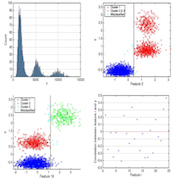
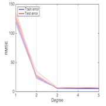
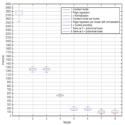

Pattern classification and machine learning project 1 GithubPaper
Project about regression and classification using linear models. One dataset per task is given without any information.
Matlab
In this project we received two datasets without any information, one for a regression task and another for a classification task. The main goal was to apply basic machine learning techniques such as exploratory data analysis, feature engineering, k-fold cross validation etc. and use some linear models in order to be prepared for the second project.
The Project
Exploratory data analysis & feature processing
Learning about the characteristics of the data is very important, we might see correlations among features, if the data are visually linearly separable, we can identify outliers and remove them for the training, estimate the data distribution etc. Moreover, we may start thinking about what transformation could we do in order express better our data.
Tuning parameters
In order to have the best root mean square error (RMSE) or a 0-1 loss for a given model, we have to use a validation set which will allow us to find the parameters which give the lowest error for our model. For example, a ridge regression with a polynomial basis has two parameters : the regularization parameter and the degree of the polynomial basis. We especially need to be careful about underfitting and overfitting.
Model selection
All the models used in this project were linear with eventually a non-linear transformation of the data. In order to find the best model among all our tuned models, we need a test set to approximate the unbiased generalized error. One possible way to do that is to use k-fold cross validation, e.g. 60% of the data for the training, 20% for the validation and 20% for the testing.
Miscellaneous
| Type | Course project |
| Degree | M.Sc. EPFL, 1st semester |
| Course | Pattern classification and machine learning |
| Duration | ~50 hours |
| Supervisor | Prof. Mohammad Emtiyaz Khan |
| Co-developer | Jason Racine |